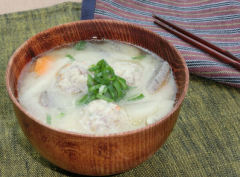

鶏だんごの豚汁風

材料（4人分）
- 鶏生だんご ... 1パック
- 大根 (いちょう切り) ... 1/4本
- 人参 (いちょう切り)... 1/2本
- ごぼう (うす切りにし、酢水につける)... 1/2本
- こんにゃく (たんざく切り) ... 1/2枚
- だしの素 ... 小さじ2
- 水 ... 1000ml
- 酒 ... 大さじ2
- 醤油 ... 大さじ1
- みりん ... 大さじ2
- 味噌 ... 大さじ4
作り方（調理時間:15分/目安）
- 鍋にだしの素、水、野菜を入れ加熱する。次に鶏だんごを入れ火を通す。あくが出たら取る。
- 具材に火が通ったら、※の調味料を入れる。ひと煮立ちしたら、出来上がり。
提供
伊藤ハム米久ホールディングス（株）